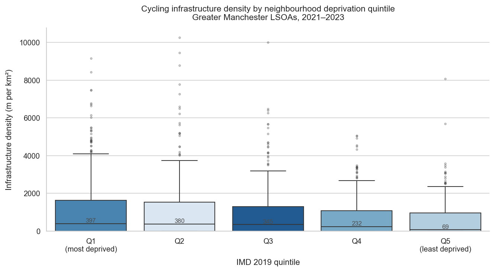
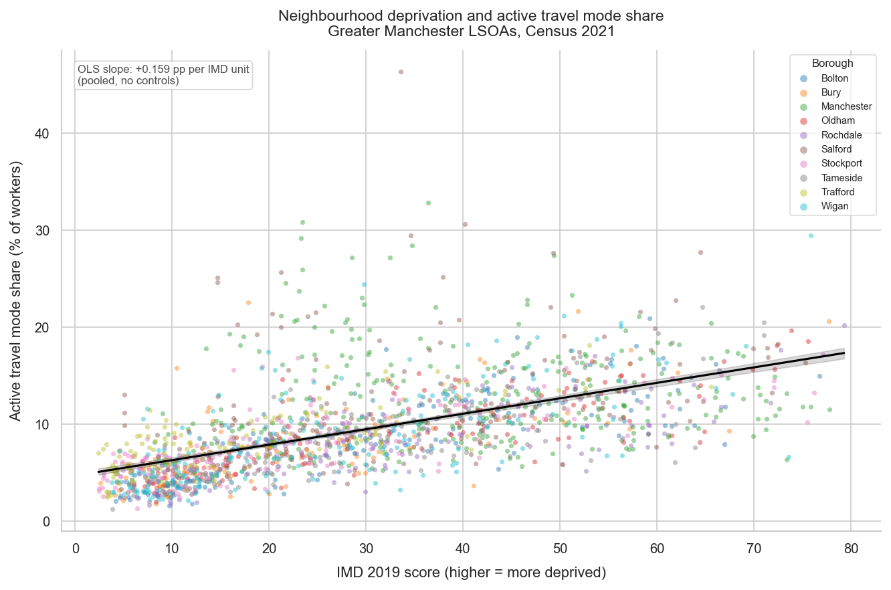
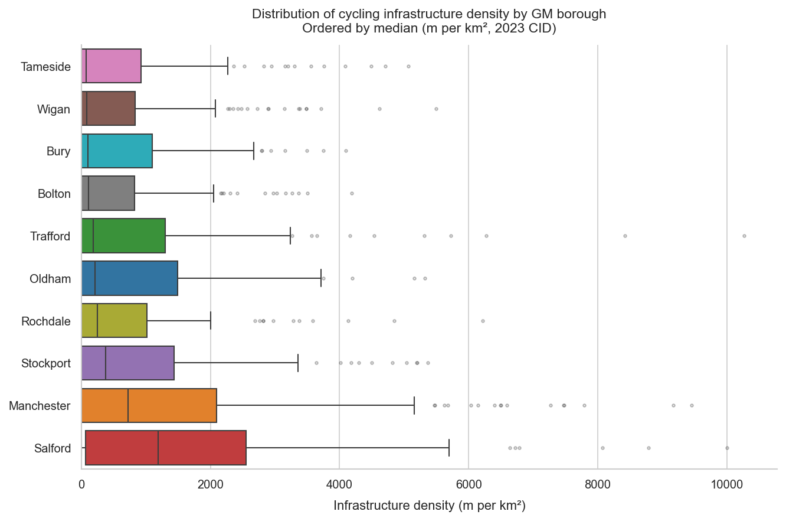
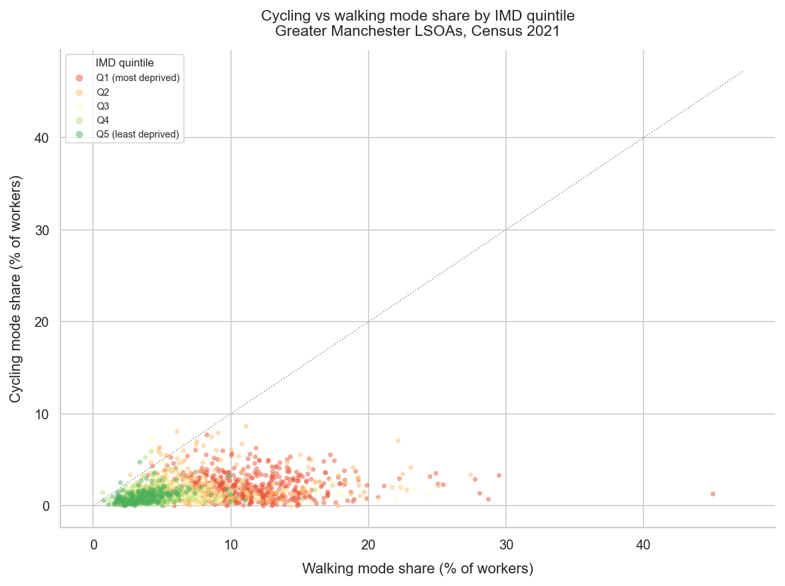

Does cycling and walking infrastructure investment across Greater Manchester vary systematically with neighbourhood deprivation — and what does this reveal about transport inequality across the ten GM boroughs?
| Variable 1 | Variable 2 | Pearson r | Spearman ρ |
|---|---|---|---|
| IMD Score | Active Travel % | 0.595 | 0.709 |
| IMD Score | Walking % | 0.582 | 0.711 |
| IMD Score | Cycling % | 0.253 | 0.312 |
| IMD Score | Infra Density | 0.092 | 0.099 |
| Infra Density | Active Travel % | 0.191 | 0.148 |
| Infra Density | Cycling % | 0.192 | 0.171 |
| Active Travel % | Walking % | 0.969 | 0.962 |
All p-values < 0.001 unless otherwise noted.
| Variable | Coef | 95% CI | p-value |
|---|---|---|---|
| Intercept | 4.352 | [4.025, 4.678] | <0.001 |
| imd_score | +0.158 | [0.148, 0.167] | <0.001 |
| log_infra_density | +0.094 | [0.037, 0.150] | 0.001 |
R² = 0.358 · N = 1,702 · HC3 robust SEs
| Variable | Coef | 95% CI | p-value |
|---|---|---|---|
| imd_score | +0.148 | [0.137, 0.159] | <0.001 |
| log_infra_density | +0.036 | [−0.019, +0.090] | 0.196 |
| Manchester FE | +2.772 | [2.016, 3.529] | <0.001 |
| Salford FE | +3.221 | [2.209, 4.233] | <0.001 |
| Trafford FE | +1.356 | [0.825, 1.887] | <0.001 |
| Rochdale FE | −0.781 | [−1.341, −0.220] | 0.006 |
R² = 0.421 · N = 1,702 · HC3 robust SEs · Bolton is reference borough




Q1 LSOAs (most deprived) have 12.5% active travel share vs 4.9% in Q5. This reflects constrained transport choices — low car ownership and cost barriers to transit — not well-served communities. Walking under necessity is not the same as walking by choice.
The IMD–walking correlation is Spearman ρ = 0.71 vs ρ = 0.31 for cycling. Walking accounts for the vast majority of the active travel–deprivation relationship. Cycling is comparatively uncommon and less strongly patterned by deprivation.
OSM cycling infrastructure is marginally denser in more deprived LSOAs (Pearson r = 0.09). This reflects city-centre geography — inner Manchester and Salford are both deprived and relatively well-supplied. The equity question is more about quality and network connectivity than raw density.
Manchester (+2.77pp) and Salford (+3.22pp) have substantially higher active travel at equivalent deprivation levels. Rochdale (−0.78pp) is below average. Borough fixed effects lift R² from 0.358 to 0.421, showing that local policies and urban form matter substantially beyond deprivation.
Log infrastructure density is significant in the baseline model (p = 0.001) but drops to p = 0.196 once borough fixed effects are included. Borough-level factors correlated with both deprivation and infrastructure density absorb its apparent effect.
Areas where people are already walking in large numbers despite poor conditions represent the highest-value targets for infrastructure improvement. Transport appraisal should weight equity of access explicitly rather than relying on aggregate trip volumes or standard cost-benefit ratios.